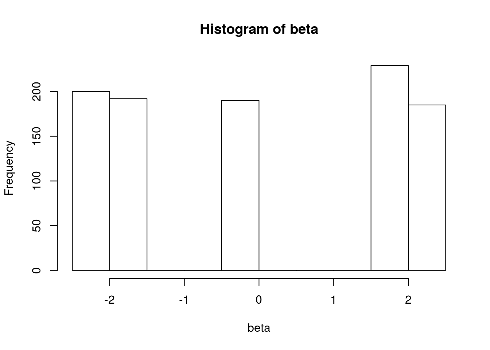
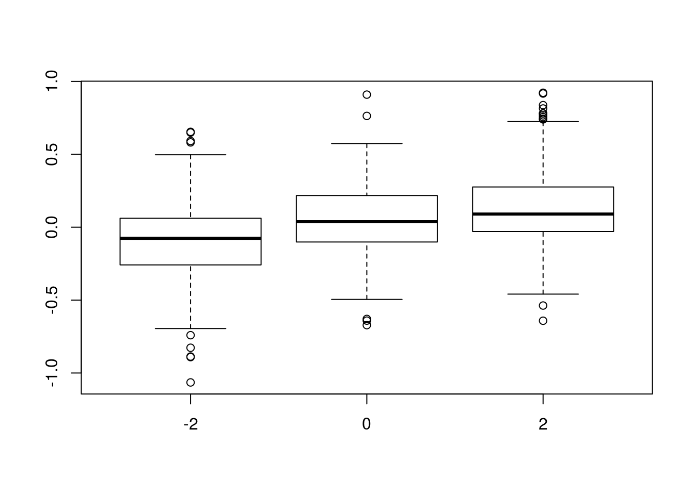
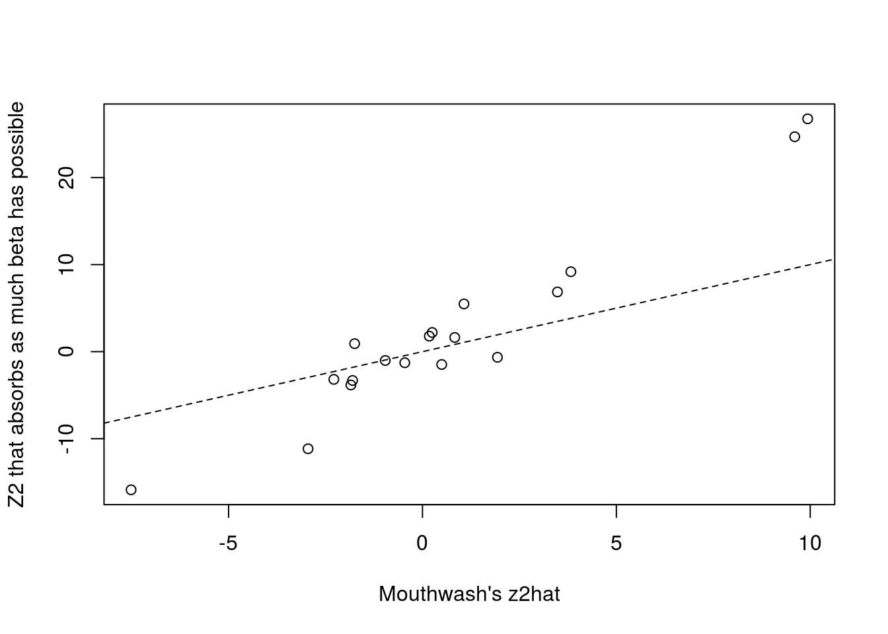
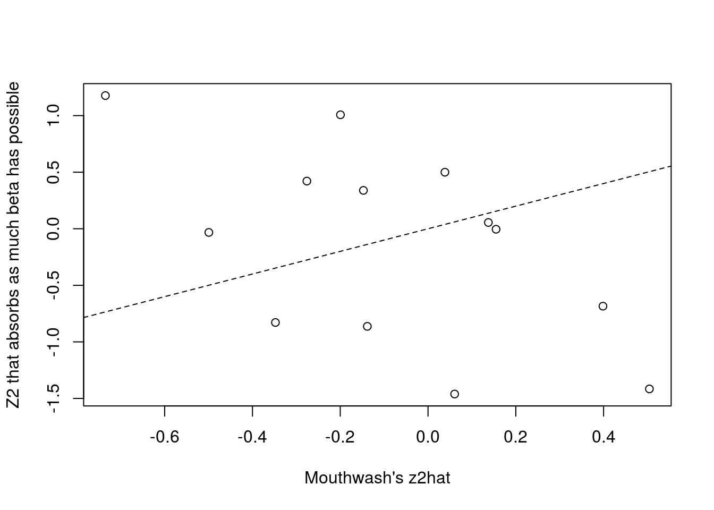

Here, I explore if the confounders are picking up the bimodality for small \(\pi_0\).
library(vicar)
library(sva)
library(ashr)
library(limma)
library(pROC)
load("../data/counts-allgenes-bimodal.rda")result_mat <- read.csv("../output/sc_joyce_bimodal_results.csv")
index <- 4 ## has a small pi0
result_mat$true_pi0[index]## [1] 0.1908count_mat <- counts_allgenes_bimodal[[index]]$counts
Y <- log2(count_mat + 1)
X <- model.matrix(~as.factor(counts_allgenes_bimodal[[index]]$condition))
colnames(X) <- c("Intercept", "Treatment")
beta <- counts_allgenes_bimodal[[index]]$beta
is_null <- counts_allgenes_bimodal[[index]]$null
## deal with some all zero columns of counts ----------------
if (any(apply(Y, 1, sd) < 10 ^ -12)) {
which_good <- apply(Y, 1, sd) > 10 ^ -12
Y <- Y[which_good, ]
beta <- beta[which_good]
is_null <- is_null[which_good]
count_mat <- count_mat[which_good, ]
}
## MOUTHWASH -------------------------------------
suppressMessages(mout <- mouthwash(Y = t(Y), X = X, cov_of_interest = 2, detailed_output = TRUE))
## SVA + VOOM + LIMMA + EBAYES -------------------
trash <- capture.output(sout <- sva(dat = Y, mod = X, X[, 1, drop = FALSE]))
Xsv <- cbind(X, sout$sv)
vout <- voom(counts = count_mat, design = Xsv)
lmout <- lmFit(vout)
ebout <- ebayes(fit = lmout)
betahat <- lmout$coefficients[, 2]
sebetahat <- sqrt(ebout$s2.post) * lmout$stdev.unscaled[, 2]
degrees_freedom <- ebout$df.total[1] ## same for all indices, so choose first
suppressMessages(ashout <- ashr::ash(betahat = betahat, sebetahat = sebetahat, df = degrees_freedom))The true betas are basically just -2, 0, and 2
hist(beta)
The effect of the confounders is definely associated with beta.
beta_round <- round(beta)
boxplot(mout$extra$az~beta_round)
If Z2 is picking up as much of the signal as possible (because it’s trying to account for deviations from unimodality), then one would expect its least squares to the true beta would be about what z2hat is. I.e.
\[ \hat{z}_2 \approx (\tilde{\alpha}^T\tilde{\alpha})^{-1}\tilde{\alpha}^T\beta \] Let’s check:
stupid_z2hat <- solve(crossprod(mout$extra$alpha_tilde)) %*% t(mout$extra$alpha_tilde) %*% beta
plot(mout$z2, stupid_z2hat, xlab = "Mouthwash's z2hat", ylab = "Z2 that absorbs as much beta has possible")
abline(0, 1, lty = 2)
cor(mout$z2, stupid_z2hat)## [,1]
## [1,] 0.9688cor(mout$z2, stupid_z2hat, method = "kendall")## [,1]
## [1,] 0.7778Whoa.
index <- 80
result_mat$true_pi0[index]## [1] 0.9298count_mat <- counts_allgenes_bimodal[[index]]$counts
Y <- log2(count_mat + 1)
X <- model.matrix(~as.factor(counts_allgenes_bimodal[[index]]$condition))
colnames(X) <- c("Intercept", "Treatment")
beta <- counts_allgenes_bimodal[[index]]$beta
is_null <- counts_allgenes_bimodal[[index]]$null
## deal with some all zero columns of counts ----------------
if (any(apply(Y, 1, sd) < 10 ^ -12)) {
which_good <- apply(Y, 1, sd) > 10 ^ -12
Y <- Y[which_good, ]
beta <- beta[which_good]
is_null <- is_null[which_good]
count_mat <- count_mat[which_good, ]
}
## MOUTHWASH -------------------------------------
suppressMessages(mout <- mouthwash(Y = t(Y), X = X, cov_of_interest = 2, detailed_output = TRUE))
## SVA + VOOM + LIMMA + EBAYES -------------------
trash <- capture.output(sout <- sva(dat = Y, mod = X, X[, 1, drop = FALSE]))
Xsv <- cbind(X, sout$sv)
vout <- voom(counts = count_mat, design = Xsv)
lmout <- lmFit(vout)
ebout <- ebayes(fit = lmout)
betahat <- lmout$coefficients[, 2]
sebetahat <- sqrt(ebout$s2.post) * lmout$stdev.unscaled[, 2]
degrees_freedom <- ebout$df.total[1] ## same for all indices, so choose first
suppressMessages(ashout <- ashr::ash(betahat = betahat, sebetahat = sebetahat, df = degrees_freedom))auc(predictor = get_lfdr(mout), response = is_null)## Area under the curve: 0.913auc(predictor = get_lfdr(ashout), response = is_null)## Area under the curve: 0.92stupid_z2hat <- solve(crossprod(mout$extra$alpha_tilde)) %*% t(mout$extra$alpha_tilde) %*% beta
plot(mout$z2, stupid_z2hat, xlab = "Mouthwash's z2hat", ylab = "Z2 that absorbs as much beta has possible")
abline(0, 1, lty = 2)
cor(stupid_z2hat, mout$z2)## [,1]
## [1,] -0.5637cor(stupid_z2hat, mout$z2, method = "kendall")## [,1]
## [1,] -0.3846A little bit, but not as much.
sessionInfo()## R version 3.3.2 (2016-10-31)
## Platform: x86_64-pc-linux-gnu (64-bit)
## Running under: Ubuntu 16.04.3 LTS
##
## locale:
## [1] LC_CTYPE=en_US.UTF-8 LC_NUMERIC=C
## [3] LC_TIME=en_US.UTF-8 LC_COLLATE=en_US.UTF-8
## [5] LC_MONETARY=en_US.UTF-8 LC_MESSAGES=en_US.UTF-8
## [7] LC_PAPER=en_US.UTF-8 LC_NAME=C
## [9] LC_ADDRESS=C LC_TELEPHONE=C
## [11] LC_MEASUREMENT=en_US.UTF-8 LC_IDENTIFICATION=C
##
## attached base packages:
## [1] stats graphics grDevices utils datasets methods base
##
## other attached packages:
## [1] pROC_1.9.1 limma_3.26.9 ashr_2.0.5 sva_3.18.0
## [5] genefilter_1.52.1 mgcv_1.8-17 nlme_3.1-131 vicar_0.1.6
##
## loaded via a namespace (and not attached):
## [1] Rcpp_0.12.12 plyr_1.8.4 iterators_1.0.8
## [4] tools_3.3.2 digest_0.6.12 annotate_1.48.0
## [7] evaluate_0.10.1 RSQLite_1.1-2 memoise_1.1.0
## [10] lattice_0.20-34 Matrix_1.2-8 foreach_1.4.3
## [13] DBI_0.6 yaml_2.1.14 parallel_3.3.2
## [16] stringr_1.2.0 knitr_1.16 S4Vectors_0.8.11
## [19] IRanges_2.4.8 stats4_3.3.2 rprojroot_1.2
## [22] grid_3.3.2 Biobase_2.30.0 AnnotationDbi_1.32.3
## [25] XML_3.98-1.8 survival_2.41-2 rmarkdown_1.6
## [28] magrittr_1.5 MASS_7.3-45 codetools_0.2-15
## [31] backports_1.0.5 htmltools_0.3.6 BiocGenerics_0.16.1
## [34] splines_3.3.2 xtable_1.8-2 stringi_1.1.2
## [37] pscl_1.4.9 doParallel_1.0.10 truncnorm_1.0-7
## [40] SQUAREM_2016.8-2This R Markdown site was created with workflowr